Cut Cross Entropy on JAX/Tunix TPU: Loss-Logits Memory Wall and Transfer Evidence
This report makes one narrow, reproducible claim: on Gemma LoRA SFT with JAX/Tunix on Cloud TPU v5e, Cut Cross Entropy removes a real loss-logits memory wall without materially changing the training result. Gemma3 270M is the exhaustive base case. Gemma3 1B and Gemma4 E2B are transfer checks under the same four-chip FSDP setup. Gemma3 4B and Gemma4 E4B are focused larger-model checks under an eight-chip FSDP setup, followed by a 12B/27B boundary check that deliberately probes where CCE stops being the dominant lever.
Executive Summary
The short version is: CCE is not a universal memory optimizer and it is not mainly a speed optimization. It is a targeted replacement for the dense loss-logits path. When that path is the memory wall, CCE opens batch/context shapes that Default CE cannot compile. When another buffer becomes the wall, the visible gain is smaller.
| Question | Result |
|---|---|
| Does CCE move the feasible batch/context frontier? | Yes. On v5litepod-1, b16 moved from L512 to L1024, b32 moved from L256 to L1024, and b64 moved from no Default CE fit to L512 with CCE. |
| Does it reduce memory at matched passing shapes? | Yes. Rank-sensitive matched rows show about 43-68% XLA planned HBM reduction. The OPUS100 b16/L512 run dropped from 12.57 GiB/chip to 4.98 GiB/chip. |
| Does real training still behave normally? | Yes. OPUS100 EN-FR b16/L512 LoRA SFT produced final train loss 0.1731 vs 0.1766 and eval loss 3.4292 vs 3.4251 for Default CE vs CCE. |
| What is the tradeoff? | Same-shape training is slower. In the 5,000-step b16/L512 run, mean step time rose from 0.106s to 0.196s. |
| Does it survive multi-chip mesh layouts? | Yes. A follow-up on v5litepod-4 tested fsdp=4,tp=1, fsdp=2,tp=2, and fsdp=1,tp=4; matched passing rows showed 53-66% per-chip XLA planned HBM reduction and CCE moved the context frontier in all three meshes. |
| Did multi-chip expose a throughput pitfall? | Yes. The repeated fsdp=2,tp=2 default chunk row was a real outlier: b16/L512 CCE was about 97x slower than Default CE. Larger TPU chunk settings reduced that same row from 15.37s/step to 0.83s/step without increasing XLA HBM. |
| Does the pattern transfer beyond 270M? | Yes through the tested 4B/E4B frontier rows. On v5litepod-4, Gemma3 1B b16 moved from L256 to L512 and b32 moved from no Default CE fit to L256; Gemma4 E2B b4 moved from L256 to L512. On v5litepod-8, Gemma3 4B b4 moved from L512 to L1024; Gemma4 E4B b4 moved from L256 to L512 and b8 moved from no Default CE fit to L256. |
| Where did it stop moving the frontier? | In the focused Gemma3 12B/27B rerun on the same v5litepod-8, CCE still reduced planned HBM but did not create a new passing batch/context shape. At that scale and mesh, other model buffers dominated the peak. |
| What TPU was used? | The primary 270M rerun used Cloud TPU v5litepod-1, one chip, in us-west4-a. Mesh and 1B/E2B transfer checks used v5litepod-4, four chips. 4B/E4B and 12B/27B focused boundary checks used v5litepod-8, eight chips. A final Tunix distributed smoke used v5litepod-16 for 12B and v5litepod-32 for 27B. |
The memory metric used throughout the new 270M plots is max per-chip XLA buffer-assignment planned HBM. This is the number that decides whether a TPU program fits on a chip. Runtime HBM snapshots are retained when the worker reported them, but they are not the primary frontier axis.
Claim Boundary
The report supports five claims:
- CCE increases the feasible batch/context frontier when the dense loss logits tensor is the active memory wall.
- At matched shapes, CCE can substantially reduce planned HBM while keeping train/eval loss in the same band.
- The drop-in Tunix patch works on both single-chip and four-chip Gemma3 270M LoRA jobs, but throughput depends on mesh layout and chunk policy.
- The same frontier pattern transfers to Gemma3 1B, Gemma4 E2B, Gemma3 4B, and Gemma4 E4B under the tested FSDP-only setups.
- The Gemma3 12B/27B boundary check is a negative transfer result: CCE still saves HBM, but the saved amount is not enough to move the fit boundary on the tested eight-chip setup.
It does not claim that CCE is always faster, that CCE removes every memory wall, or that the OPUS100 samples establish translation quality. Those rows are sanity checks for training behavior and generation-path integrity.
Why This Should Work
Default language-model cross entropy usually materializes a full logits tensor with shape roughly:
batch_size * context_length * vocabulary_size
That tensor grows directly with the two knobs we care about for SFT capacity: batch and context length. CCE computes the same cross-entropy objective by streaming over token/vocab chunks, avoiding the dense full-vocab logits tensor in the loss path.
The Tunix integration is a drop-in patch for the LoRA training path. During training, it intercepts the model output before the tied LM-head decode and computes CCE against the frozen LM head. During generation, the original decode path is restored before sampling. A regression test now guards that restore path because generation must not see the hidden-state intercept.
Experiment Scope
| Field | Value |
|---|---|
| Model | google/gemma-3-270m-it |
| Training mode | Tunix PEFT/LoRA |
| Main LoRA rank | 16 |
| TPU | Cloud TPU v5litepod-1, 1 chip |
| Zone | us-west4-a |
| Systems dataset | deterministic synthetic SFT records |
| Quality dataset | OPUS100 EN-FR |
| Compared variants | Default CE vs CCE |
| Other acceleration patches | disabled |
| Conservative CCE chunks | token chunk 128, vocab chunk 8192 unless swept |
| TPU large-chunk preset | token chunk 512, vocab chunk 65536 for the mixed-mesh follow-up |
The one-chip rerun produced 307 result rows: frontier sweeps, pressure points, rank sensitivity, chunk tuning, one-step parity, and OPUS100 training runs. The four-chip follow-up added repeated mesh timings, frontier sweeps, HLO text scans, mixed-mesh chunk tuning, and a 1,000-step OPUS100 parity run.
The transfer checks were split into three tiers. The 1B/E2B tier reused the four-chip FSDP setup and retained short OPUS100 sanity rows. The 4B/E4B tier used an eight-chip FSDP setup and focused on frontier and chunk behavior. The 12B/27B tier reused the same eight-chip setup as a boundary check: it asks whether CCE alone still moves the fit frontier once the base model is much larger.
| Model | TPU / mesh | Synthetic coverage | OPUS100 sanity row |
|---|---|---|---|
| Gemma3 1B | v5litepod-4, fsdp=4,tp=1 primary; partial fsdp=2,tp=2 |
frontier grid, chunk grid | b8/L512, 1,000 steps |
| Gemma4 E2B | v5litepod-4, fsdp=4,tp=1 primary; TP-heavy probe only |
frontier grid, chunk grid, mesh probe | b4/L256, 1,000 steps |
| Gemma3 4B | v5litepod-8, fsdp=8,tp=1 |
focused frontier grid, CCE chunk grid | not run |
| Gemma4 E4B | v5litepod-8, fsdp=8,tp=1 |
focused frontier grid, CCE chunk grid | not run |
| Gemma3 12B | v5litepod-8, fsdp=8,tp=1 |
focused boundary grid | not run |
| Gemma3 27B | v5litepod-8, fsdp=8,tp=1 |
focused boundary grid | not run |
Those transfer rows are deliberately smaller than the 270M evidence package. Their purpose is to test whether the same memory/frontier story survives model scale and Gemma generation, and then to mark where CCE alone stops being the active boundary mover.
1. Frontier: CCE Moves the Fit Boundary
The frontier sweep is deliberately synthetic. It is not intended to prove
translation quality. Its job is to isolate the batch * context * vocab memory
pressure and ask whether the same model, TPU, and LoRA configuration can run
when only the loss implementation changes.
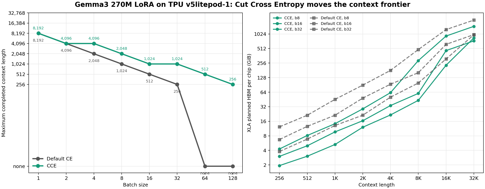
The left panel is the practical result: maximum completed context length by batch size. The right panel shows the underlying XLA planned HBM pressure for representative batch sizes.
| Batch | Default CE max context | CCE max context | Gain |
|---|---|---|---|
| 1 | 8,192 | 8,192 | 1.0x |
| 2 | 4,096 | 4,096 | 1.0x |
| 4 | 2,048 | 4,096 | 2.0x |
| 8 | 1,024 | 2,048 | 2.0x |
| 16 | 512 | 1,024 | 2.0x |
| 32 | 256 | 1,024 | 4.0x |
| 64 | none | 512 | CCE-only fit |
| 128 | none | 256 | CCE-only fit |
The important pattern is not that CCE makes every shape fit. It moves the wall. For small batches, both variants can still be limited by other model or activation buffers. As batch grows, the loss-logits tensor becomes the visible wall, and CCE opens shapes that Default CE cannot compile.
The pass/fail map shows that the sweep did not stop at the first Default CE failure. CCE was pushed until it reached its own boundary.
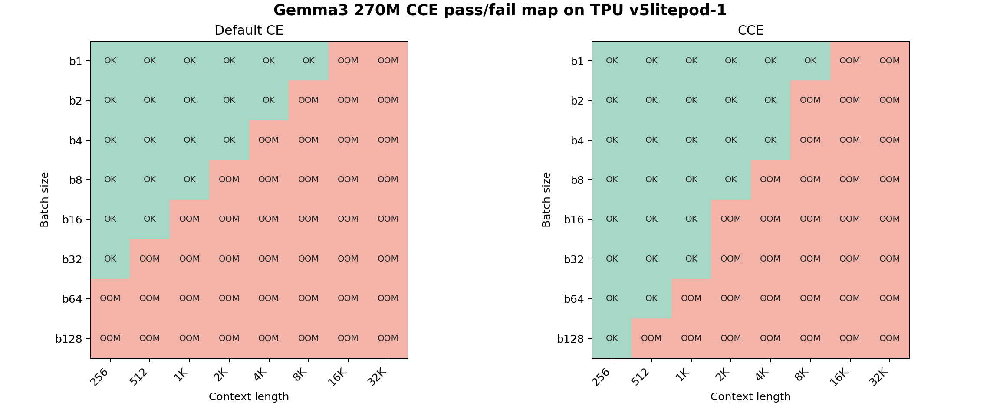
2. Pressure Points: Same Shape, Different Memory Wall
The pressure-point rows keep the sweep readable by focusing on a few representative shapes.
| Shape | Default CE | Default XLA HBM | CCE | CCE XLA HBM |
|---|---|---|---|---|
| b16/L512 | OK | 12.57 GiB/chip | OK | 4.98 GiB/chip |
| b16/L1024 | compile OOM | 21.36 GiB/chip | OK | 9.65 GiB/chip |
| b32/L512 | compile OOM | 21.32 GiB/chip | OK | 8.13 GiB/chip |
| b32/L1024 | compile OOM | 45.45 GiB/chip | OK | 14.26 GiB/chip |
| b64/L512 | compile OOM | 57.41 GiB/chip | OK | 14.13 GiB/chip |
| b64/L1024 | resource exhausted | 88.02 GiB/chip | compile OOM | 25.16 GiB/chip |
This is the cleanest systems result: CCE turns multiple Default CE OOM rows into completed TPU train steps, and the remaining CCE failures occur at much higher pressure points.
3. Rank and Chunk Checks
CCE should mostly track batch * context * vocab, not LoRA rank. The rank sweep
used ranks 4, 16, and 64 across b8/b16/b32/b64 and L512/L1024/L2048/L4096.
The frontier pattern was unchanged across ranks: for example, b16 moved from
L512 to L1024 and b32 moved from no Default CE fit at L512 to CCE fitting
through L1024.
The chunk sweep asks a different question: once CCE is enabled, which token/vocab chunk sizes are faster at a fixed shape? On b16/L512, all tested chunk pairs used roughly the same XLA planned HBM, but step time varied.
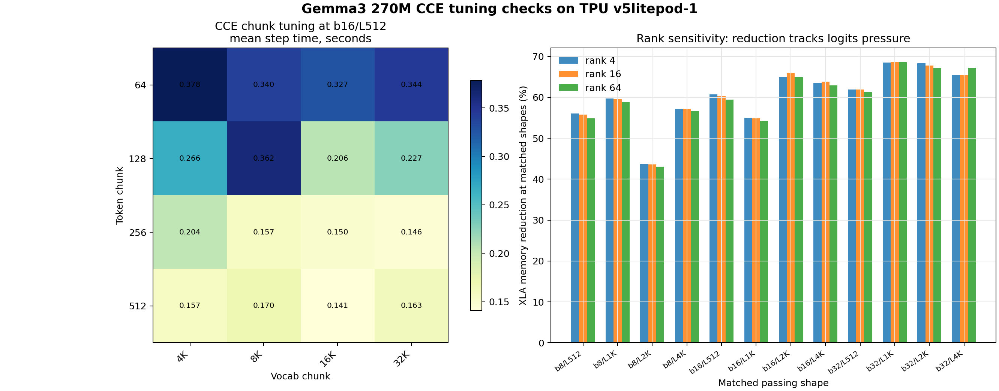
The best b16/L512 chunk rows were:
| Token chunk | Vocab chunk | Mean step time | Valid tokens/sec | XLA HBM |
|---|---|---|---|---|
| 512 | 16K | 0.141s | 12,588 | 4.98 GiB/chip |
| 256 | 32K | 0.146s | 12,134 | 4.98 GiB/chip |
| 256 | 16K | 0.150s | 11,868 | 4.98 GiB/chip |
| 512 | 4K | 0.157s | 11,312 | 4.98 GiB/chip |
The conservative package knobs are 128/8192 because they are stable across
shapes. The one-chip sweep suggests that larger token chunks can be faster for
this particular 270M b16/L512 case, but chunk tuning should be shape-aware. The
four-chip follow-up below shows why: the best chunk policy can change when the
mesh changes.
4. Multi-Chip Mesh Generalization and the Mixed-Mesh Outlier
The main rerun is intentionally single-chip so that the memory story is easy to read. We then checked whether the patch still works when Tunix/JAX shards the same Gemma3 270M LoRA job over four TPU chips.
| Field | Value |
|---|---|
| TPU | Cloud TPU v5litepod-4, 4 chips |
| Zone | us-west4-a |
| Meshes | fsdp=4,tp=1, fsdp=2,tp=2, fsdp=1,tp=4 |
| Repeated timing grid | batches 16/32, contexts 512/1024 |
| Frontier grid | batches 1/4/8/16/32/64/128, contexts 256/512/1024/2048/4096 |
| Steps | 8 repeated synthetic steps for timing; 2 synthetic steps for frontier |
| Other acceleration patches | disabled |
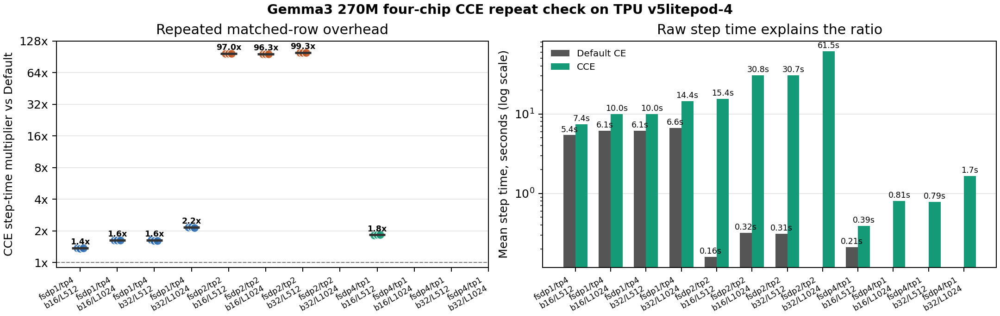
The result is not a single-chip artifact. CCE worked in the FSDP-only, mixed-FSDP/TP, and TP-only layouts. At b16/L512, all three meshes reduced max per-chip XLA planned HBM, but throughput behavior was mesh-specific:
| Mesh | Default step | CCE step | CCE multiplier | XLA HBM reduction |
|---|---|---|---|---|
fsdp=4,tp=1 |
0.212s | 0.388s | 1.83x | 65.9% |
fsdp=2,tp=2 |
0.158s | 15.374s | 97.0x | 57.5% |
fsdp=1,tp=4 |
5.410s | 7.390s | 1.37x | 52.7% |
That table separates three facts that are easy to blur together:
- CCE still saves memory in every tested mesh.
- TP-heavy layouts can be slow even without CCE on this small model.
- The dramatic CCE throughput outlier is local to the mixed
fsdp=2,tp=2layout with the conservative default chunk settings.
The broader four-chip frontier sweep still shows the desired capacity behavior:
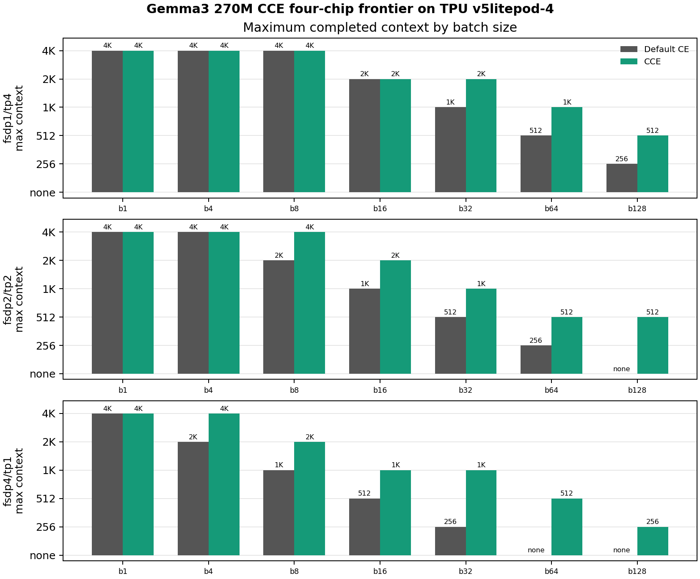
| Mesh | Batch | Default CE max context | CCE max context |
|---|---|---|---|
fsdp=4,tp=1 |
16 | 512 | 1024 |
fsdp=4,tp=1 |
32 | 256 | 1024 |
fsdp=4,tp=1 |
64 | none | 512 |
fsdp=2,tp=2 |
16 | 1024 | 2048 |
fsdp=2,tp=2 |
64 | 256 | 512 |
fsdp=2,tp=2 |
128 | none | 512 |
fsdp=1,tp=4 |
32 | 1024 | 2048 |
fsdp=1,tp=4 |
64 | 512 | 1024 |
fsdp=1,tp=4 |
128 | 256 | 512 |
To inspect the fsdp=2,tp=2 outlier, we kept full train-step XLA dumps and
scanned the optimized HLO text. This scan is intentionally a coarse compiler
artifact check, not a full profiler. It did not show a simple collective-count
explosion large enough to explain the 97x slowdown by itself.
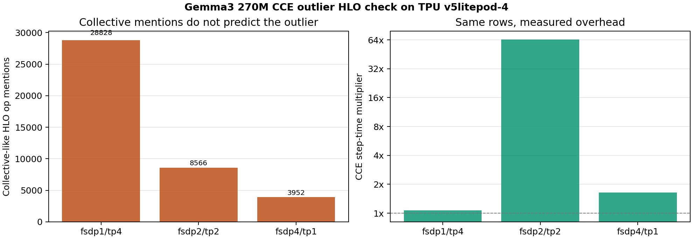
The more actionable finding came from chunk tuning. The package default
(token_chunk=128, vocab_chunk=8192) is conservative and portable, but it is
too fine-grained for this mixed mesh. On fsdp=2,tp=2, b16/L512, increasing
the chunk size kept XLA HBM at 2.65 GiB/chip while dramatically reducing step
time:
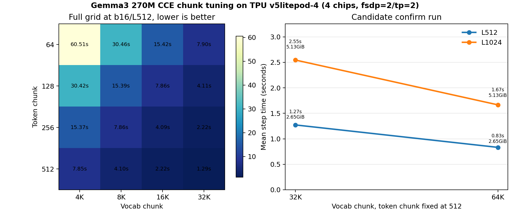
| Shape | Token chunk | Vocab chunk | Mean step time | XLA HBM |
|---|---|---|---|---|
| b16/L512 | 128 | 8192 | 15.39s | 2.65 GiB/chip |
| b16/L512 | 512 | 32768 | 1.27s | 2.65 GiB/chip |
| b16/L512 | 512 | 65536 | 0.83s | 2.65 GiB/chip |
| b16/L1024 | 128 | 8192 | 30.83s | 5.13 GiB/chip |
| b16/L1024 | 512 | 32768 | 2.55s | 5.13 GiB/chip |
| b16/L1024 | 512 | 65536 | 1.67s | 5.13 GiB/chip |
The same grid also gives a one-factor-at-a-time view. At b16/L512, holding
token_chunk=128 fixed and increasing vocab_chunk made the run faster; holding
vocab_chunk=8192 fixed and increasing token_chunk showed the same pattern.
XLA planned HBM stayed at 2.65 GiB/chip for every row in these two slices.
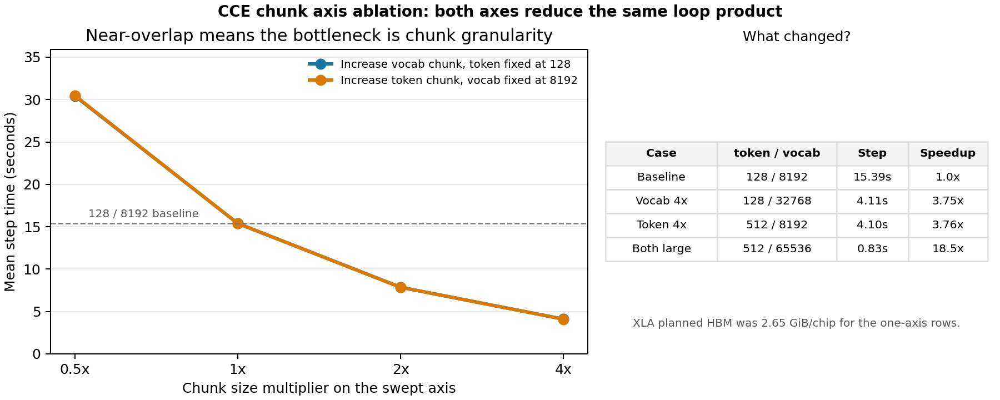
| Fixed knob | Swept knob | Step-time range | Interpretation |
|---|---|---|---|
token_chunk=128 |
vocab_chunk=4096 -> 32768 |
30.42s -> 4.11s | Larger vocab chunks reduced the inner CCE loop count. |
vocab_chunk=8192 |
token_chunk=64 -> 512 |
30.46s -> 4.10s | Larger token chunks reduced the outer CCE loop count. |
So the mixed-mesh slowdown was not caused by only one bad axis. The problematic
case was excessive chunk granularity: many small token chunks multiplied by many
small vocab chunks. The larger 512/65536 preset reduces both loop dimensions,
which is why it fixes the outlier so strongly.
The clean interpretation is therefore: CCE is compatible with FSDP/TP sharding,
and the large mixed-mesh slowdown is mostly a chunk-policy problem rather than a
correctness or memory failure. The package keeps the conservative 128/8192
default, but adds an opt-in TUNIX_ACCEL_CE_PRESET=tpu_large_chunks shortcut
for the validated 512/65536 TPU setting.
5. Transfer Checks: Scaling the Claim
After the 270M base case was complete, we asked whether the same systems claim survives larger Gemma models. The transfer checks are intentionally narrower than the 270M package: they test whether CCE still moves the fit frontier under the chosen mesh, not whether every 270M ablation repeats at every model size.
Four-Chip 1B/E2B Checks
Gemma3 1B and Gemma4 E2B used v5litepod-4, four chips, with fsdp=4,tp=1 as
the primary mesh.
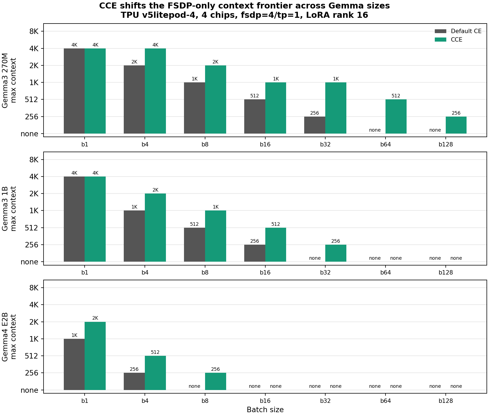
The transfer result is directionally the same as the 270M result: CCE extends the maximum passing context at the same batch size, and the benefit is most visible when Default CE hits the loss-logits wall.
| Model | Batch | Default CE max context | CCE max context |
|---|---|---|---|
| Gemma3 1B | 4 | 1,024 | 2,048 |
| Gemma3 1B | 8 | 512 | 1,024 |
| Gemma3 1B | 16 | 256 | 512 |
| Gemma3 1B | 32 | none | 256 |
| Gemma4 E2B | 1 | 1,024 | 2,048 |
| Gemma4 E2B | 4 | 256 | 512 |
| Gemma4 E2B | 8 | none | 256 |
For matched OPUS100 sanity runs, CCE again reduced max per-chip XLA planned HBM while leaving train/eval loss in the same band. These are 1,000-step sanity rows only; they are not translation-quality claims.
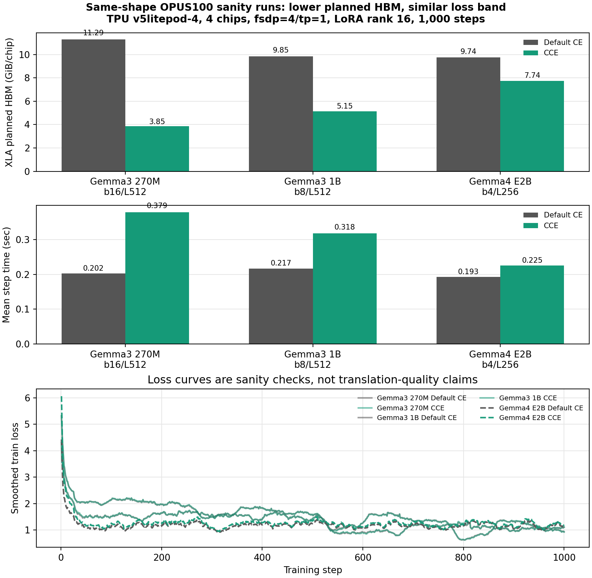
| Model / shape | Default HBM | CCE HBM | Default step | CCE step | Default final/eval loss | CCE final/eval loss |
|---|---|---|---|---|---|---|
| Gemma3 270M b16/L512 | 11.29 GiB/chip | 3.85 GiB/chip | 0.202s | 0.379s | 1.4906 / 2.1263 | 1.5500 / 2.1754 |
| Gemma3 1B b8/L512 | 9.85 GiB/chip | 5.15 GiB/chip | 0.217s | 0.318s | 1.0290 / 1.3959 | 1.0366 / 1.3906 |
| Gemma4 E2B b4/L256 | 9.74 GiB/chip | 7.74 GiB/chip | 0.193s | 0.225s | 1.7619 / 0.8294 | 1.7426 / 0.8956 |
The same transfer run also reinforces the chunk-policy lesson from the 270M
mixed-mesh outlier. At FSDP-only 1B/E2B shapes, chunk tuning has modest upside;
at the 270M mixed mesh, the conservative 128/8192 setting was the dominant
throughput problem. The E2B probe shows the other side of the story: TP-heavy
meshes can be impractically slow even when the model fits in memory, so larger
models should prefer FSDP-only unless there is a separate reason to pay for TP.
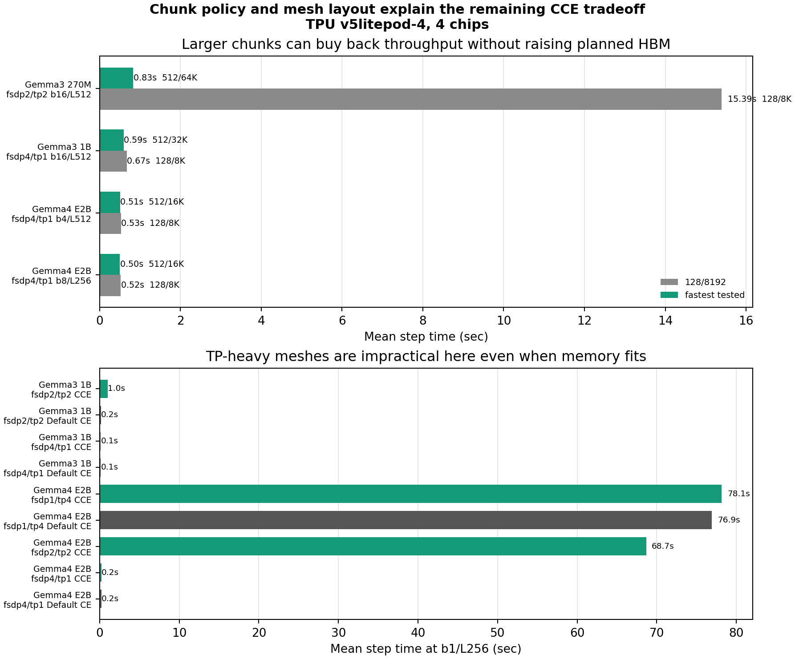
Eight-Chip 4B/E4B Checks
We then ran a focused larger-model transfer check on v5litepod-8,
fsdp=8,tp=1. This was not another exhaustive sweep. It kept the same question:
when the model is larger and the TPU has more chips, do we still see CCE opening
shapes that Default CE cannot compile?
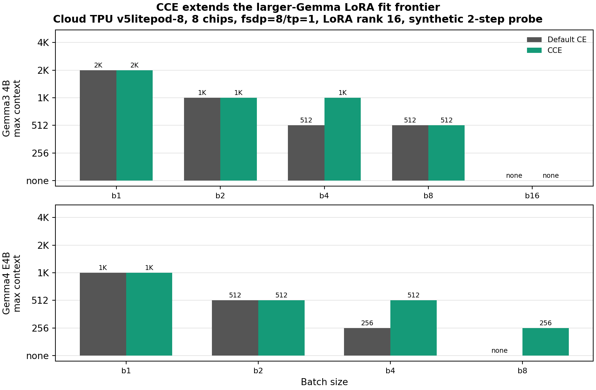
The answer is yes, with the expected boundary: CCE helps when the failed shape is near the loss-logits wall. It does not magically make every batch/context pair fit.
| Model | Batch | Default CE max context | CCE max context | Note |
|---|---|---|---|---|
| Gemma3 4B | 4 | 512 | 1024 | CCE-only fit at b4/L1024 |
| Gemma4 E4B | 4 | 256 | 512 | CCE-only fit at b4/L512 |
| Gemma4 E4B | 8 | none | 256 | CCE-only fit at b8/L256 |
The pressure rows show the same story in the raw memory metric used throughout the report: max per-chip XLA buffer-assignment planned HBM.
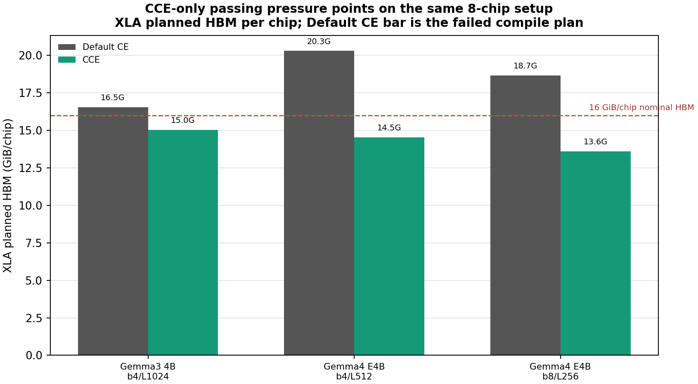
| Model / shape | Default CE status | Default XLA HBM | CCE status | CCE XLA HBM |
|---|---|---|---|---|
| Gemma3 4B b4/L1024 | compile failed | 16.54 GiB/chip | OK | 15.04 GiB/chip |
| Gemma4 E4B b4/L512 | compile failed | 20.30 GiB/chip | OK | 14.53 GiB/chip |
| Gemma4 E4B b8/L256 | compile failed | 18.66 GiB/chip | OK | 13.60 GiB/chip |
The Gemma3 4B and Gemma4 E4B rows also show why CCE savings should not be
predicted from parameter count alone. At the same b4/L512 shape, Gemma3 4B
completed under both variants and went from 9.58 to 8.58 GiB/chip. Gemma4 E4B
failed under Default CE with a 20.30 GiB/chip compile plan, then completed under
CCE at 14.53 GiB/chip. Both are "4B-class" models, but their XLA graphs do not
put the same fraction of peak memory in the Default CE loss path. The larger E4B
gain is therefore not a generic "4B model" rule; it is a graph-specific result
where the failed Default CE compile plan was dominated more heavily by
loss-logits buffers.
The larger-model chunk tuning result is also useful, but more modest than the 270M mixed-mesh outlier. At these FSDP-only pressure points, chunk choice mostly changes step time by a few percent while planned HBM stays in the same band.
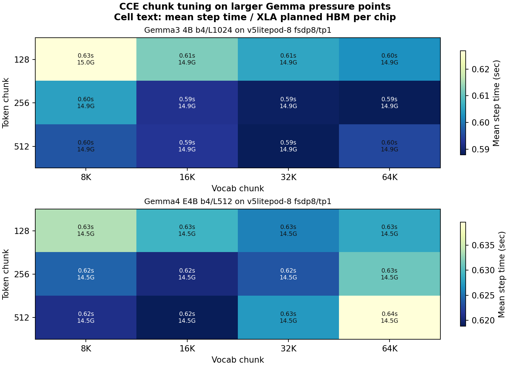
| Model / shape | Conservative chunk | Conservative step | Fastest tested chunk | Fastest tested step | XLA HBM |
|---|---|---|---|---|---|
| Gemma3 4B b4/L1024 | 128/8192 | 0.627s | 256/65536 | 0.588s | 14.93-15.04 GiB/chip |
| Gemma4 E4B b4/L512 | 128/8192 | 0.634s | 512/16384 | 0.619s | 14.53-14.54 GiB/chip |
The important practical rule is: use CCE to move the memory wall, then tune
token_chunk and vocab_chunk on the exact model/mesh/shape you intend to run.
The memory savings transfer, but the fastest chunk policy does not have to be
universal.
Eight-Chip 12B/27B Boundary Rerun
The next question was whether the 4B/E4B pattern continues automatically at
12B and 27B. We reran a focused boundary grid on the same single-host Cloud TPU
v5litepod-8, eight chips, fsdp=8,tp=1, LoRA rank 16, synthetic two-step
probe. The result is a useful negative boundary: CCE still reduces planned HBM,
but it no longer creates a new passing shape.
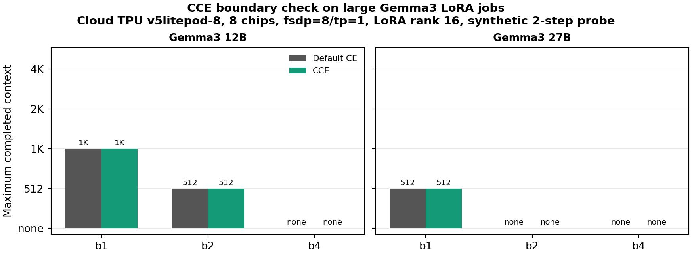
| Model | Batch | Default CE max context | CCE max context | Result |
|---|---|---|---|---|
| Gemma3 12B | 1 | 1,024 | 1,024 | no frontier movement |
| Gemma3 12B | 2 | 512 | 512 | no frontier movement |
| Gemma3 12B | 4 | none | none | no fit under either variant |
| Gemma3 27B | 1 | 512 | 512 | no frontier movement |
| Gemma3 27B | 2 | none | none | no fit under either variant |
| Gemma3 27B | 4 | none | none | no fit under either variant |
The boundary memory plot shows why. Near the pass/fail edge, CCE saves memory, but the saved amount is too small to cross the 16 GiB/chip fit line.
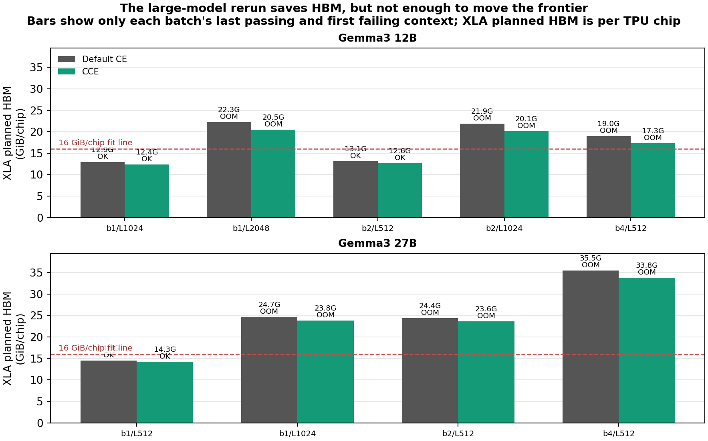
| Model / shape | Default CE status | Default XLA HBM | CCE status | CCE XLA HBM | Saved |
|---|---|---|---|---|---|
| Gemma3 12B b1/L2048 | compile failed | 22.29 GiB/chip | compile failed | 20.47 GiB/chip | 1.82 GiB/chip |
| Gemma3 12B b2/L1024 | compile failed | 21.92 GiB/chip | compile failed | 20.12 GiB/chip | 1.80 GiB/chip |
| Gemma3 12B b4/L512 | compile failed | 19.01 GiB/chip | compile failed | 17.31 GiB/chip | 1.70 GiB/chip |
| Gemma3 27B b1/L1024 | compile failed | 24.66 GiB/chip | compile failed | 23.82 GiB/chip | 0.84 GiB/chip |
| Gemma3 27B b2/L512 | compile failed | 24.38 GiB/chip | compile failed | 23.62 GiB/chip | 0.76 GiB/chip |
| Gemma3 27B b4/L512 | compile failed | 35.50 GiB/chip | compile failed | 33.81 GiB/chip | 1.69 GiB/chip |
This does not contradict the 4B/E4B result. It narrows the claim. CCE is most visible when the dense loss-logits path is the active peak-memory wall. In the 12B/27B single-host eight-chip setup, the model graph is already close to or over the per-chip HBM limit before the loss path can become the decisive buffer. CCE still trims the graph, but it is a partial lever rather than a frontier-changing one.
After fixing the runner to call jax.distributed.initialize() before Tunix
model setup, we ran actual multi-host Tunix smoke tests for the larger models.
These are not frontier sweeps; they only prove that the same drop-in CCE path
survives real distributed Tunix launch on larger TPU slices.
| Model | TPU | Mesh | Variant | Status | XLA train-step HBM | Local-host runtime peak |
|---|---|---|---|---|---|---|
| Gemma3 12B | v5litepod-16 |
fsdp=16,tp=1 |
Default CE | OK | 6.96 GiB/chip | 13.52 GB / 4 local chips |
| Gemma3 12B | v5litepod-16 |
fsdp=16,tp=1 |
CCE | OK | 6.72 GiB/chip | 13.51 GB / 4 local chips |
| Gemma3 27B | v5litepod-32 |
fsdp=32,tp=1 |
Default CE | OK | 10.31 GiB/chip | 16.35 GB / 4 local chips |
| Gemma3 27B | v5litepod-32 |
fsdp=32,tp=1 |
CCE | OK | 10.06 GiB/chip | 16.35 GB / 4 local chips |
The distributed logs confirm process_count=4, global_devices=16 for 12B
and process_count=8, global_devices=32 for 27B. The runtime peak in this
table is the artifact host's local four-chip aggregate, not the whole pod.
6. Real EN-FR Training Parity
The systems sweeps prove memory behavior, not usefulness. For a training sanity check, we ran OPUS100 EN-FR LoRA SFT.
Same-shape A/B:
| Field | Default CE | CCE |
|---|---|---|
| Batch / max length | b16 / L512 | b16 / L512 |
| Steps | 5,000 | 5,000 |
| LoRA rank | 16 | 16 |
| Learning rate | 2e-4 | 2e-4 |
| Final train loss | 0.1731 | 0.1766 |
| Eval loss | 3.4292 | 3.4251 |
| 16-sample BLEU sanity | 16.54 | 18.72 |
| 16-sample chrF sanity | 41.22 | 40.34 |
| XLA planned HBM | 12.57 GiB/chip | 4.98 GiB/chip |
| Mean step time | 0.106s | 0.196s |
| Wall time | 10.0 min | 18.2 min |
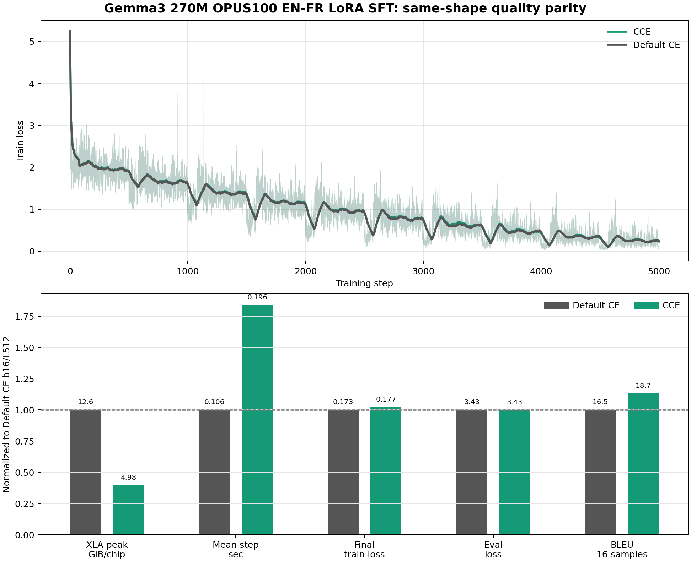
The loss curves follow the same trajectory. The normalized metric panel shows the tradeoff clearly: much lower planned HBM, similar train/eval loss, and slower same-shape steps.
BLEU and chrF here are deliberately labeled as sanity metrics. They use 16 evaluation examples, so they are useful for catching obvious generation breakage, not for making a translation-quality claim.
We also repeated a shorter 1,000-step OPUS100 run on the four-chip FSDP-only mesh to check that sharded training behaves normally:
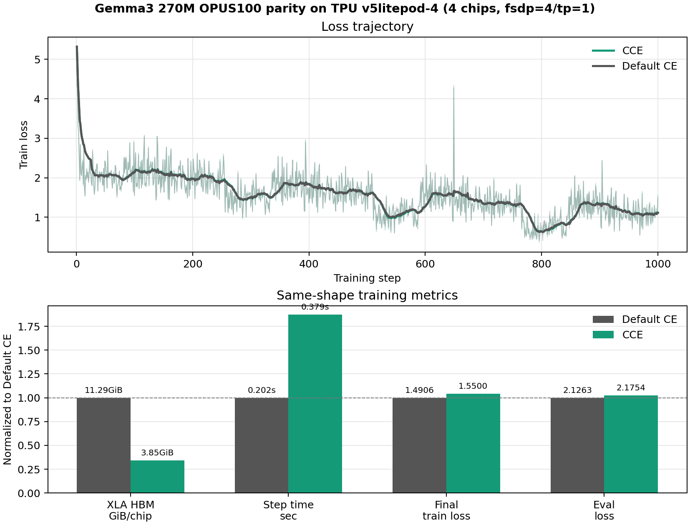
| Field | Default CE | CCE |
|---|---|---|
| TPU / mesh | v5litepod-4, fsdp=4,tp=1 |
v5litepod-4, fsdp=4,tp=1 |
| Batch / max length | b16 / L512 | b16 / L512 |
| Steps | 1,000 | 1,000 |
| Final train loss | 1.4906 | 1.5500 |
| Eval loss | 2.1263 | 2.1754 |
| XLA planned HBM | 11.29 GiB/chip | 3.85 GiB/chip |
| Mean step time | 0.202s | 0.379s |
This is not a replacement for the longer one-chip 5,000-step parity result. Its purpose is narrower: the same CCE patch trains normally under the four-chip FSDP sharding setup while preserving the expected memory/speed tradeoff.
We also ran a CCE capacity row: b64/L512 for 1,250 steps, matching the rough token budget of b16/L512 for 5,000 steps. It fit at 14.13 GiB/chip and finished in 19.2 minutes. That row did not create a speed win in this setup; it mainly shows that CCE can spend the saved memory on a much larger batch.
7. Generation Sanity Samples
The restored generation path produced normal text for both variants. The outputs below are not polished translation results; the point is narrower: after the same training recipe, CCE and Default CE are in the same qualitative band and generation no longer sees the hidden-state intercept used by the loss patch.
Sample 1
- EN: They met without me.
- Reference: Ils se sont rencontrés sans moi.
- Default CE: - Ils ne sont pas venus pour moi.
- CCE: Ils ne sont pas venus sans que je ne soit en aware.
Sample 2
- EN: Pay cash week .
- Reference: J'ai payé en liquide pour la semaine.
- Default CE: Pay week .
- CCE: Paye de la semaine.
Sample 3
- EN: The certifrcate can be printed in one or more of the languages of the Convention andshould be completed in one of these languages.
- Reference: Le certificat peut être imprimé dans une ou plusieurs langues de la convention et doit être complété dans l'une de ces langues.
- Default CE: La certificat peut être imprimé dans un des langues de la Convention et complété dans une des langue
- CCE: La certificatabilité peut être imprimée dans une ou des langues de la Convention et peut être compli
Sample 4
- EN: The other issue, which is of enormous significance, is the right to the veto.
- Reference: L'autre question, d'une portée énorme, est le droit de veto.
- Default CE: L'autre aspect important du droit à veto, qui est de grande importance, est le droit à l'apanche.
- CCE: Encore heureux, on questionne aussi le droit à la proposition, à cette aussi, du autre facteur qui rend cette session si importante : l'énoncé de fait du veto.
Sample 5
- EN: Therefore, let me summarize, at least from the vantage point of one Finance Minister.
- Reference: Par conséquent, permettez-moi d'en résumer la teneur, à tout le moins en tant que ministre des finances.
- Default CE: Par conséquent, je veux vous rappeler, d'un point de vue financier.
- CCE: Par conséquent, je veux te rappeler au moins l'angle de l'examinateur.
The complete 32-row side-by-side sample file is retained as
01-CCE/data/gemma3_270m_full_cce/generation_samples.jsonl.
8. Interpretation and Limitations
CCE is a strong memory lever when the loss logits are a dominant tensor. That is why the effect becomes clearer as batch and context grow. It is not a universal memory solution: after CCE removes the dense logits tensor, the next wall can be activations, attention, model state, sharding layout, or compile-time buffer planning.
The tradeoff is also real. CCE streams reductions instead of doing one dense logits computation, so same-shape step time can increase. On the 270M b16/L512 quality run, the slowdown was about 1.85x. The value of CCE is therefore not "always faster." The value is "more trainable shapes before OOM," and sometimes that extra capacity may be worth the slower step.
The mesh check adds one more caveat: memory savings transfer across FSDP/TP layouts, but throughput does not transfer automatically. TP-heavy layouts can make a small model communication-bound, and conservative chunk settings can make mixed FSDP/TP layouts much slower than necessary. The right comparison is therefore always same-model, same-mesh, Default CE versus CCE, with chunk policy recorded as part of the system configuration.
9. Reproducibility Artifacts
The retained files are intentionally compact: enough to redraw the report and audit every claim, without keeping extracted TPU dumps or checkpoints.
Single-chip evidence package:
01-CCE/data/gemma3_270m_full_cce/run_manifest.csv01-CCE/data/gemma3_270m_full_cce/all_runs.csv01-CCE/data/gemma3_270m_full_cce/frontier_summary.csv01-CCE/data/gemma3_270m_full_cce/pressure_points.csv01-CCE/data/gemma3_270m_full_cce/rank_frontier_summary.csv01-CCE/data/gemma3_270m_full_cce/chunk_tuning.csv01-CCE/data/gemma3_270m_full_cce/training_history.csv01-CCE/data/gemma3_270m_full_cce/training_summary.csv01-CCE/data/gemma3_270m_full_cce/generation_metrics.csv01-CCE/data/gemma3_270m_full_cce/generation_samples.jsonl01-CCE/data/gemma3_270m_full_cce/oom_events.csv
Four-chip mesh evidence package:
01-CCE/data/gemma3_270m_mesh_cce/mesh_summary.csv01-CCE/data/gemma3_270m_mesh_cce/matched_memory.csv01-CCE/data/gemma3_270m_mesh_cce_repeat/repeat_summary.csv01-CCE/data/gemma3_270m_4chip_frontier/frontier_summary.csv01-CCE/data/gemma3_270m_outlier_hlo/hlo_op_counts.csv01-CCE/data/gemma3_270m_4chip_chunk/chunk_summary.csv01-CCE/data/gemma3_270m_4chip_chunk/chunk_axis_ablation.csv01-CCE/data/gemma3_270m_4chip_quality/training_summary.csv
Gemma3 1B / Gemma4 E2B transfer package:
01-CCE/data/gemma_1b_e2b_cce_transfer/run_manifest.csv01-CCE/data/gemma_1b_e2b_cce_transfer/transfer_runs.csv01-CCE/data/gemma_1b_e2b_cce_transfer/frontier_summary.csv01-CCE/data/gemma_1b_e2b_cce_transfer/matched_metrics.csv01-CCE/data/gemma_1b_e2b_cce_transfer/chunk_summary.csv01-CCE/data/gemma_1b_e2b_cce_transfer/training_summary.csv01-CCE/data/gemma_1b_e2b_cce_transfer/training_history.csv01-CCE/assets/gemma_cce_transfer_frontier.png01-CCE/assets/gemma_cce_transfer_quality.png01-CCE/assets/gemma_cce_transfer_chunk_mesh.png
Gemma3 4B / Gemma4 E4B focused transfer package:
01-CCE/data/gemma_4b_e4b_cce_transfer/run_manifest.csv01-CCE/data/gemma_4b_e4b_cce_transfer/transfer_runs.csv01-CCE/data/gemma_4b_e4b_cce_transfer/frontier_summary.csv01-CCE/data/gemma_4b_e4b_cce_transfer/matched_metrics.csv01-CCE/data/gemma_4b_e4b_cce_transfer/pressure_points.csv01-CCE/data/gemma_4b_e4b_cce_transfer/chunk_summary.csv01-CCE/assets/gemma_cce_large_transfer_frontier.png01-CCE/assets/gemma_cce_large_transfer_pressure.png01-CCE/assets/gemma_cce_large_transfer_chunk_tuning.png
Gemma3 12B / 27B focused boundary package:
01-CCE/data/gemma3_12b_27b_cce_focused/run_manifest.csv01-CCE/data/gemma3_12b_27b_cce_focused/frontier_runs.csv01-CCE/data/gemma3_12b_27b_cce_focused/frontier_summary.csv01-CCE/data/gemma3_12b_27b_cce_focused/boundary_hbm_points.csv01-CCE/data/gemma3_12b_27b_cce_focused/matched_metrics.csv01-CCE/assets/gemma3_12b_27b_cce_focused_frontier.png01-CCE/assets/gemma3_12b_27b_cce_focused_hbm.png
Lower-level audit files are also kept beside those summaries, including
frontier_runs.csv, rank_sensitivity.csv, mesh_runs.csv, repeat_runs.csv,
and per-run manifests. Compressed raw worker artifacts are retained under the
corresponding raw_artifacts/ directories. Extracted raw/ directories are
reproducible from those tarballs and should not be committed.